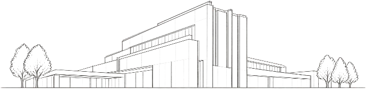
HÔPITAL MÉTROPOLITAIN DE L’ARTOIS
Santé · Lens, France
MON RÔLE
Conception et suivi de projet au sein de l’agence
AGENCE
Michel Beauvais Associés
SITE OFFICIEL (nouvel onglet)
Architecture · Humain · Durable
Valéria Denisova · Architecte inscrite à l’Ordre — PACA
Une expérience construite à travers différentes typologies et échelles de projet.
Des environnements de soins et de recherche au service de l’humain.

Santé · Lens, France
MON RÔLE
Conception et suivi de projet au sein de l’agence
AGENCE
Michel Beauvais Associés
SITE OFFICIEL (nouvel onglet)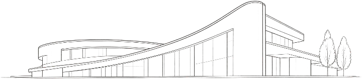
Paris-Saclay, France
MON RÔLE
Suivi de projet et coordination technique
AGENCE
Dietmar Feichtinger Architectes
SITE OFFICIEL (nouvel onglet)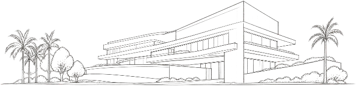
Monaco, Principauté de Monaco
MON RÔLE
Synthèse et coordination (BIM)
AGENCE
AIA Life Designers
SITE OFFICIEL (nouvel onglet)Des lieux de vie durables et harmonieux, à différentes échelles.
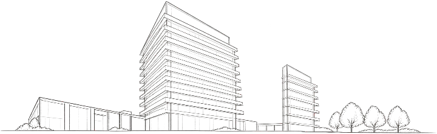
Monaco, Principauté de Monaco
MON RÔLE
Visas et synthèse (BIM), coordination des intervenants
AGENCE
Square Architecte, en collaboration avec Zaha Hadid Architects
SITE OFFICIEL (nouvel onglet)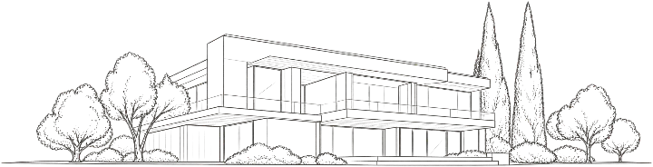
Côte d’Azur, France
MON RÔLE
Conception et suivi de projet
AGENCE
—
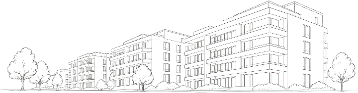
France
MON RÔLE
Études et coordination technique
AGENCE
—
Architecte HMONP
Architecte HMONP, j’ai plus de quinze ans d’expérience en architecture de santé et de recherche, en projets résidentiels et en rénovation. Mon parcours associe le travail au sein d’agences en France et à Monaco à une expérience en pratique indépendante.
J’ai notamment contribué au Centre Hospitalier Princesse Grace au sein d’AIA Life Designers, puis aux études et à la coordination technique du Schuylkill au sein de Square Architecte, dans le cadre d’un projet mené en collaboration avec Zaha Hadid Architects.
L’architecture hospitalière nourrit mon regard sur les lieux de vie : comprendre les usages, considérer la lumière et le contexte, puis relier les choix architecturaux aux besoins des personnes. En rénovation, je cherche à faire évoluer les bâtiments sans leur faire perdre leur identité.
Basée à Beausoleil, sur la Côte d’Azur.
Échanges en français, anglais et russe.
HMONPÉcole d’architecture de Paris-Val-de-Seine · 2016–2017
Master 2 — Architecture et ComplexitéENSA Strasbourg · 2010–2011
Projets auxquels j’ai contribué au sein d’agences. Mon rôle est précisé pour chaque référence dans la rubrique Projets.
Placer l’usager au cœur de chaque projet.
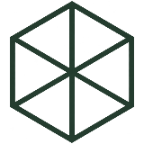
Faire évoluer les lieux avec responsabilité, dans le respect de leur identité et de leur environnement.
Rechercher des solutions pertinentes, adaptées aux usages et aux contraintes de chaque projet.
Construire ensemble, avec écoute et exigence.
Une architecture attentive aux personnes, aux usages et à l’identité des lieux.
VALÉRIA DENISOVALes personnes
Les usages
Le contexte
Le lieu
Les contraintes
Les besoins
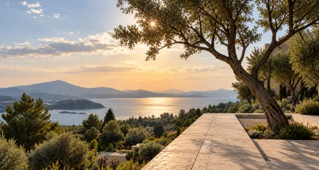
Lumière
Matière
Espace
Vivant
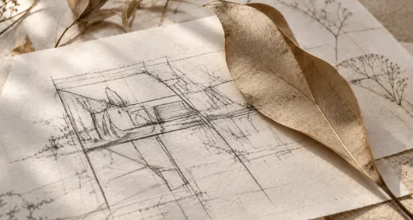
Technique
Coordination
Réalisation
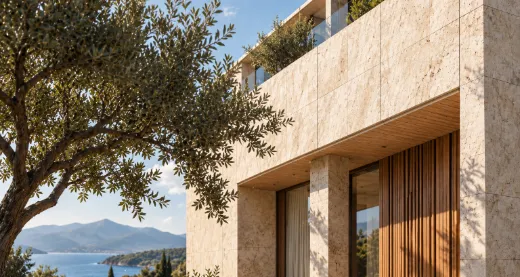
Placer l’humain au cœur de la conception pour des lieux qui prennent soin.
Imaginer des espaces responsables en harmonie avec leur environnement et le temps.
Des réponses uniques, adaptées à chaque contexte, chaque usage et chaque histoire.
“L’architecture façonne notre quotidien. Elle peut soigner, rassembler, inspirer et améliorer la vie.”
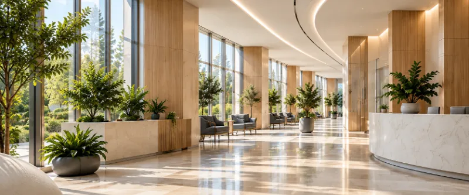
Des environnements de soins pensés durablement.
Une architecture au service des patients et des équipes soignantes, alliant qualité d’usage, performance technique, innovations et responsabilité environnementale.
Établissements de santé
Pôles spécialisés
EHPAD · Cliniques · Centres
et d’enseignement
et de soins
Bien-être des médecins
et du personnel soignant
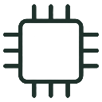
Intégration des équipements médicaux,
robotisation et digitalisation des espaces
Conception responsable,
energies maîtrisées, maintenance optimisée
Des lieux plus humains, apaisants et inclusifs
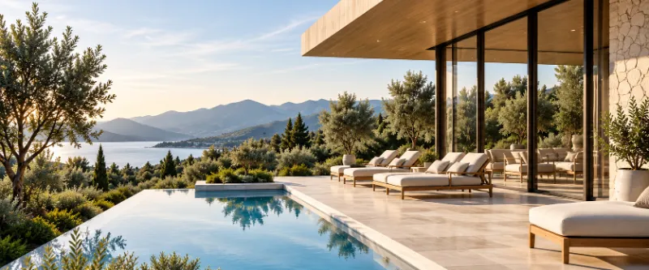
Des lieux de vie durables et harmonieux.
Des maisons et des villas conçues pour un art de vivre contemporain, alliant confort, élégance et respect de l’environnement.
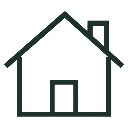
Construction neuve
Sur mesure
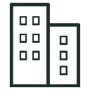
Réhabilitation de biens existants
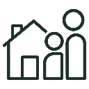
Résidentiel · Co-living
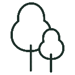
Terrasses · Piscines · Paysage
Des espaces lumineux,
fonctionnels et apaisants
Des projets durables
et évolutifs
Chaque projet est unique,
adapté à votre mode de vie
Matériaux durables
et faible empreinte carbone
ACTUALITÉS
Premiers articles bientôt.
CONTACT
Je serais ravie de vous rencontrer pour échanger
et imaginer ensemble des solutions sur mesure.
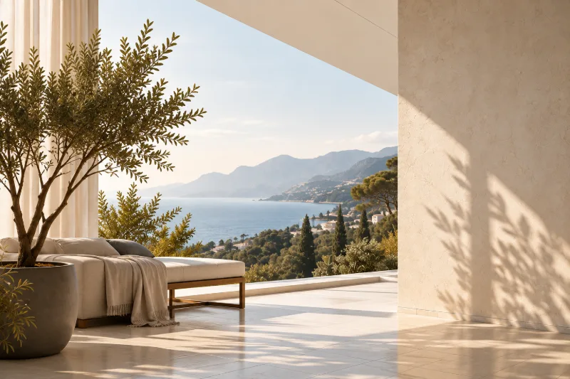